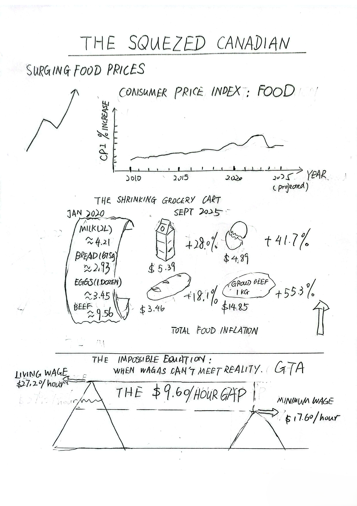
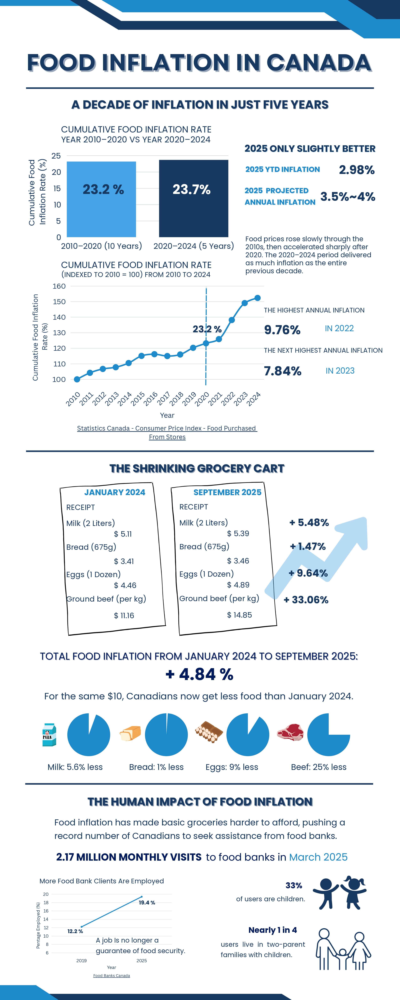

Storyboard
Foreign Workers in Singapore
Overview
I chose to design a persuasive infographic around the topical theme of food inflation in Canada and its devastating impact on Canadians' ability to afford basic necessities. My central message was that food inflation has accelerated drastically, creating a widening gap between low wages and the actual cost of living, which in turn has pushed a record number of working individuals and families to rely on food banks. To build this persuasive narrative, I completed three rounds of designs as shown below.
First Sketch

Second Trial

Final Version

Personal Notes
I ended up submitting this assignment a few hours late due to an unexpected technical complication. I was working on my computer using my child's Canvas account and was accidentally logged out after he fell asleep. After panicking for a couple of hours, I finally managed to complete it using his computer.
Despite the stress of the late submission, I was very satisfied with the quality of my persuasive infographic. I was pleased to know that the teaching assistant or my professor also liked it.